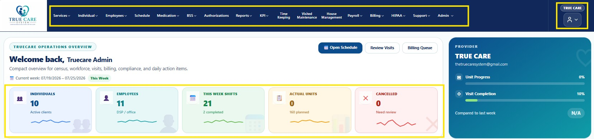

The System Navigation menu provides quick access to every module within the True Care System. Available menu items are displayed according to the authenticated user's assigned role and permissions.
After signing in, the main navigation menu is displayed on the left side of the application. Use this menu to quickly access the modules required for your daily work.

Figure 1. True Care System Main Navigation Menu
| Module | Description |
|---|---|
| Dashboard | Main landing page after login. |
| Individuals | Manage individuals receiving services. |
| Employees | Manage employee records. |
| Schedule | Create and manage staff schedules. |
| Medication | Medication administration records (MAR). |
| BSS | Behavior Support Services. |
| Authorizations | Manage service authorizations. |
| Reports | Generate operational and compliance reports. |
| Time Keeping | Employee attendance and time tracking. |
| Billing | Billing, EVV, Claims and Sandata Integration. |
| Payroll | Payroll processing. |
| Administration | Provider setup, users, roles, permissions and system configuration. |
Each user only sees the modules that are authorized for their assigned role. Navigation is automatically controlled by the system's role-based security model.
Why don't I see all menu items?
The navigation menu is customized according to your assigned role and permissions.
Can I rearrange the menu?
No. The navigation structure is managed by your organization.
Why can't I open a module?
Your account may not have permission to access that module.